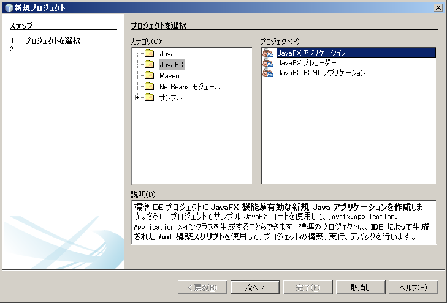
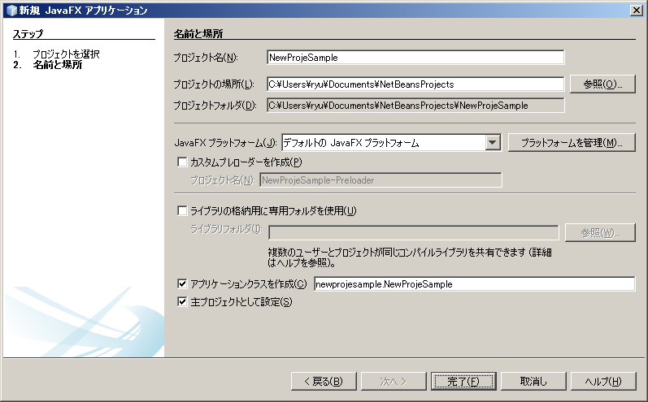
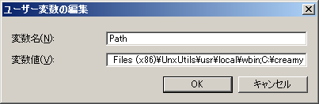
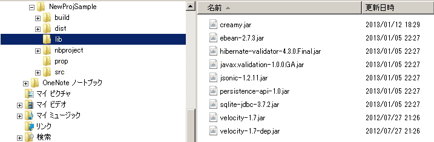

creamyのプロジェクトの作成手順を記述します。
以下のステップで作成します。
NetBeansを起動し、ファイルメニューから新規プロジェクトを選択します。
新規プロジェクトダイアログにて、カテゴリにJavaFX、プロジェクトにJavaFXアプリケーションを選択します。
適切なプロジェクト名を付けて、Javaプラットフォームに「デフォルトの JavaFX プラットフォーム」を選択し、完了を押します。
Creamyは、NetBeans上に作成したプロジェクトに対して、Creamyツール（creamy_tools）を実行することによってインストールします。 Creamyツールのダウンロードは こちら のページからできます。 ダウンロードした圧縮ファイルを、任意のディレクトリに解凍して配置します。
（例）C:￥creamy、/home/user/creamy
Creamyツールのインストールの後は、インストールディレクトリに環境変数のPathを通します。
・Windowsの場合（Windows7）
マイコンピュータのプロパティ-> システムの詳細設定-> 環境変数-> ユーザー環境変数からPathを選択して編集
すでに登録してある値の最後に、;（セミコロン）を追加した後に今回設定するパスを追加してください。
・Macの場合
※TBD
Creamyツールは、コンソール（Windowsの場合はコマンドプロンプト、Macの場合はTerminal）にて実行します。 コンソールを起動したら、NetBeansにて作成した新規プロジェクトのディレクトリまで移動します。
creamyのプロジェクトを新規作成するには、newコマンドを使用します。
（例）
1 | creamy_tools new
|
“new comand done!” とメッセージが表示されたら成功です。
newコマンドを実行した後は、以下のようなディレクトリツリーの構成になります。
プロジェクトフォルダ
│ ・・・
├─build
│ ・・・
├─dist
│ ・・・
├─lib
│ creamy.jar
│ ebean-2.7.3.jar
│ hibernate-validator-4.3.0.Final.jar
│ javax.validation-1.0.0.GA.jar
│ jsonic-1.2.11.jar
│ persistence-api-1.0.jar
│ sqlite-jdbc-3.7.2.jar
│ velocity-1.7-dep.jar
│ velocity-1.7.jar
├─nbproject
│ project.properties ・・・・・クラスパスの記述が追加される。
│ ・・・
├─prop
│ creamy.properties
│ ebean.properties
│ velocity.properties
└─src
├─controllers
├─helpers
│ render.vm
├─models
├─newprojsample
│ NewProjSample.java ・・・エントリーポイントのjavaファイルはCreamy用に書き換えられる。
└─views
newコマンドの実行の後、libファイルが作成され、以下のように必要なライブラリのjarファイルが配置されます。
・デフォルトのDBMS
creamyのプロジェクトは、デフォルトでSQLite3を使用してデータをストアします。そのため、OR マッパーとして使用する EBeanの設定ファイル（ebean.properties）は、以下のように設定されています。
#SQLite
datasource.default.username=
datasource.default.password=
datasource.default.databaseUrl=jdbc:sqlite:computer_database.sqlite3
datasource.default.databaseDriver=org.sqlite.JDBC
datasource.default.heartbeatsql=select 1
datasource.default.isolationlevel=read_uncommitted
・ebean.propのddl.run設定に関する注意事項
newコマンド実行後は、DB上に必要なテーブルがcreateされていないため、デフォルトでebean.ddl.runの設定がtrueになっています。
1 | ebean.ddl.run=true
|
scaffoldを実行後にアプリケーションを実行した際に、ddlが実行されてテーブルがcreateされるので、その後はこの設定をfalseにしてください。